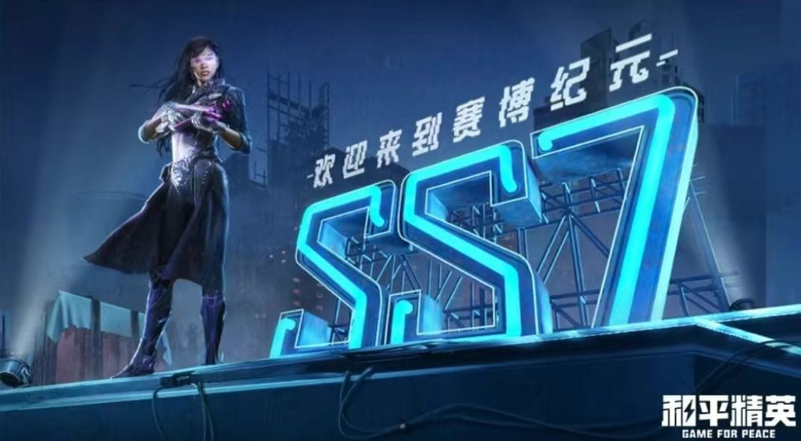

和平精英，是由光子工作室群（光子娱乐）基于 PC端《刺激战场》开发的一款竞技射击游戏。本作采用“双端联动”的开发理念，官方团队与和平精英原班人马深度合作，以高品质游戏内容与前沿科技打造全新的沉浸式玩法体验，给玩家带来独特的射击竞技快感。玩家可以通过手机在不同场景中自由探索、自由战斗；使用不同武器在游戏世界中“开挂”；可随时随地利用手机和队友进行语音聊天，共同交流战术、相互帮助。这些都将为玩家带来全新的体验，并在游戏中留下深刻的印象。在每一次对决中，你都能感受到枪林弹雨般的激烈对抗与团队配合。
